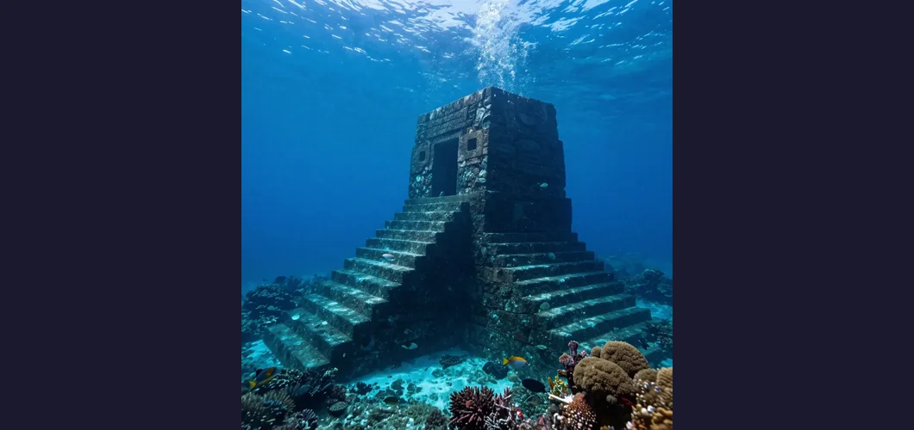

The Yonaguni Monument: Japan's Underwater Mystery

In 1986, a diver named Kihachiro Aratake slipped into the warm sea off the south coast of Yonaguni Island. Yonaguni is the westernmost island of Japan. Aratake was looking for a new spot to watch the hammerhead sharks that gather there each winter.
He found something else. It would start a big debate about the past. Archaeology is the study of the past through the things people left behind.
About 25 meters below the surface, in clear blue water, lay a huge block of stone. It stretched across the seafloor like the bones of a giant building. It had flat terraces, straight walls, and sharp right angles. A wide, level path ran along its base.
Aratake had found what the world now calls the Yonaguni Monument. It is a rock formation under the sea. It is so angular and geometric that it has divided scientists and alternative researchers for nearly four decades.
The Yonaguni Monument is also called the Yonaguni Submarine Ruins. It lies off the south coast of Yonaguni. Yonaguni is one of Japan’s Ryukyu Islands. It is closer to Taiwan, about 107 kilometers away, than to the main islands of Japan. About 1,700 people live there.
Sources give different sizes. The main shape is about 100 to 150 meters long. Its highest point is about 5 or 6 meters under the surface. Its base goes down to about 25 meters. The rock is fine-grained sandstone and mudstone of the Yaeyama Group. This formed in the Early Miocene epoch, about 20 million years ago.
The debate since Aratake’s find comes down to one question. Are the odd, regular shapes the work of human hands? Or did nature make them?
Many people who see the main formation think it looks less like natural rock and more like a giant stepped platform or pyramid. There is a large, flat upper terrace. There are steps going down like a huge staircase. There are almost straight walls that meet at angles of about 90 degrees.
There is also a broad, flat path, often called “The Road.” It runs along the base of the structure and looks very even for a long way. There are also smaller platforms and ledges. People who think the site is man-made say there are too many of them, and they are too regular, to be natural.
The sight is truly striking. Divers’ photos and videos show huge angular blocks rising from the sandy seafloor. Their flat sides and sharp edges cast bold shadows in the filtered sunlight.
One argument for a human origin is about sea level. About 20,000 years ago, during the coldest time of the last Ice Age, the seas were much lower than today. The formation now lies under water. So back then it would have stood on dry land.
Supporters say that if people built it, they built it before the seas rose at the end of the Ice Age. It would then be among the oldest structures on Earth, as old as Göbekli Tepe in Turkey or older. But the archaeologist Richard Pearson thinks the story of how it sank is unlikely.
Two main voices stand at opposite ends of the debate. One is Dr. Masaaki Kimura, a Japanese marine geologist at the University of the Ryukyus. He has studied the monument for many years. He is the best-known supporter of the idea that it is man-made. The other is Dr. Robert Schoch, an American geologist at Boston University. He is best known for his controversial new dating of the Great Sphinx of Giza. He has dived at Yonaguni and argues that the formation is natural.
Kimura’s view has changed over the years. At first he said the site was at least 10,000 years old. In a 2007 report he changed that to 2,000 to 3,000 years. He points to features that he says natural forces could not explain. One is the even width of “The Road.” Another is the right angles where walls meet. He also sees what he thinks are carvings on some surfaces. And he sees smaller shapes around the main one that he believes form a whole building complex.
Kimura has seen in it a castle, roads, monuments, and even a stadium. Some people link the site to the Jōmon. The Jōmon lived in Japan from about 14,000 BCE to 300 BCE. They are known for their fancy pottery. Kimura also links the site to the legend of Mu, a lost continent.
Schoch first dived at Yonaguni in 1997. He sees it very differently. He agrees that the formation is impressive and its features are striking. But he says the natural qualities of the rock can explain it.
Sandstone and mudstone are sedimentary rocks, which form from layers of sand and mud. They break naturally along joint planes. These are old lines of weakness in the rock. When the rock breaks along them, it leaves flat faces and right angles. The area also has many earthquakes, and quakes crack rock along those planes.
Schoch says the steps match the natural layers in the rock. He says the straight walls come from jointing. He thinks the carvings that Kimura sees are natural scratches. He points out that similar rock shapes appear on land nearby on Yonaguni itself. Another famous example is the Giant’s Causeway in Northern Ireland, where nature made very geometric features.
Neither Japan’s Agency for Cultural Affairs nor the government of Okinawa Prefecture treats the monument as an important cultural object. Neither has done research or protection work there.
Most geologists think it is a natural formation. Some writers call the claims of a human origin pseudoarchaeology, which means a false kind of archaeology. The legend of Mu is a lost continent in the Pacific that people first proposed long ago. But the Mu idea has no support in mainstream geology or archaeology.
Yonaguni matters not because it will probably rewrite history. Most geologists say it is natural. It matters because it shows how hard it is to study the past. Suppose an unknown civilization once lived on coasts that are now under the sea. Even a small chance of this is a tempting question.
The coastal settlement theory says that some early human towns were along coasts that are now underwater. Rising seas at the end of the last Ice Age flooded large areas of dry land. Some early human communities may lie under the ocean now, out of reach and mostly unmapped.
The Yonaguni debate also shows how hard underwater archaeology is. On land, a careful dig can reveal layers of living, building methods, and objects. Underwater sites can only be reached by diving. That is hard on the body and limited in time. It allows looking and some sampling, but not a full dig.
The Yonaguni Monument sits on the border between what we know and what we wish were true. It has an undeniable visual power. It is a huge, angular, stepped shape on the ocean floor in an area with many earthquakes. When you look at it, you want it to be man-made. When you study it as a geologist, you see that nature can make things that look just like buildings, given enough time and the right rock.
The mainstream view is that the Yonaguni Monument is a natural formation. Rock layers cracked along joint planes, and erosion and earth movement shaped it. In 2024, a team of geologists led by Hironobu Suga of Kyushu University reported that no archaeological remains or signs of human activity have been found there. They also saw erosion still at work on the rock.
But even if it is natural, it has done something useful. It has drawn attention to the lands that were dry during the last Ice Age and are now under water. They may hide discoveries that nobody has made yet. Sometimes the best discoveries are not the ones that prove our ideas. They are the ones that remind us how much we still have to learn.
References & Further Reading
Wikipedia: Yonaguni — Population about 1,700, distance to Taiwan about 107 km, hammerhead sharks
📚 Recommended Reading: Underworld: Flooded Kingdoms of the Ice Age by Graham Hancock (on Amazon) — As an Amazon Associate, we earn from qualifying purchases.
Editorial note: The shapes are real and strange, but most geologists say they are natural rock that cracked along its layers. A few researchers still think people shaped it, and no tools or other signs of people have been found. See our Editorial Policy.